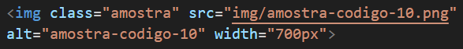

Site de exemplo
Existe uma tag chamada <main>, ela funciona como uma div, e serve para indicar o conteúdo principal do seu site.
Tag main
Nessa tag foram adicionados os seguintes estilos:
- background-color = cor do fundo da div.
- width = largura da div em pixels.
- padding = margem entre a div e o conteúdo em pixels.
- margin = alinha a div no centro da página independente do tamanho da tela.
- border-radius = arredonda os cantos da caixa, raio em pixels.
- box-shadow = gera uma sombra para a caixa. Recebe 4 parametros: (deslocamento horizontal da sombra, deslocamento vertical, nível de fade, cor), respectivamente.
Tag body
Nessa tag foram adicionados os seguintes estilos:
- background-image: linear-gradient(); = Degradê (explicação na pág02)
- background-attachment: fixed; = Não mover o elemento ao mover a barra de rolagem.
- height: 100% = deixa a configuração do elemento ocupando 100% de seu tamanho vertical.
Tag img
Nessas tags foi criada uma classe "amostra" para diferenciar as imagens de amostra da imagem da logo do site. Também foram adicionados os seguintes estilos:
Logo
Nessas tag img foi criada uma classe "logo" para diferencia-la das imagens de amostra. Também foram adicionados o seguintes estilo: .logo {text-align: center;}
Tag p
Nessa tag foi adicionado o estilo text-align: justify; que deixa todo o texto com o alinhamento justificado.